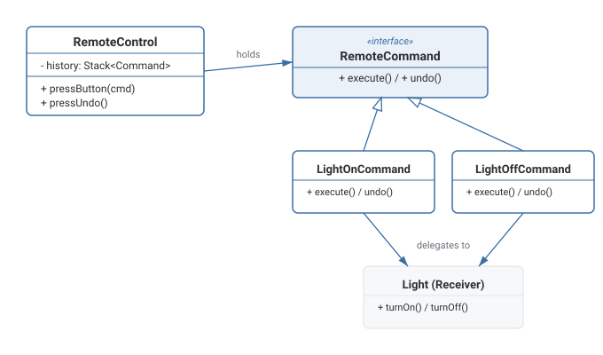

Command Pattern
Wraps a request as an object with an execute() method, so requests can be stored, queued, logged, passed around, or undone instead of vanishing as one-shot method calls.
Theory
The problem, in plain terms
You're building a universal remote control with buttons that can be reprogrammed to trigger different actions — one button turns a light on, another closes the garage door, another triggers a whole "movie night" macro. The remote itself shouldn't need to know anything about lights or garage doors; it just needs to know "when this button is pressed, run whatever action was assigned to it." You also want undo — pressing an "undo" button should reverse whatever the last action did, again without the remote needing to know the specifics of what it's undoing.
Command wraps a request — "turn the light on" — as an object with a single execute() method (and often undo()). The remote (the Invoker) just holds a Command reference per button and calls execute() on it; it never touches the light directly. Because the request is now an object, it can be stored, queued, logged, passed around, or reversed, instead of being a one-shot method call that vanishes the moment it runs.
How it's built
A Command interface declares execute() (and optionally undo()). Concrete Commands (LightOnCommand, LightOffCommand) each hold a reference to a Receiver (the Light object that actually does the work) and, in execute(), call the appropriate method on it. The Invoker (the RemoteControl) holds Command references and calls execute() without knowing which concrete command or receiver is involved. For undo, the Invoker can keep a history stack of executed Commands and call undo() on the most recent one.
Keep the Invoker completely ignorant of Receiver types — it should only ever call execute()/undo() on the Command interface, never reach through to the Receiver directly.
Adding undo as an afterthought without giving each Command enough state to actually reverse its own effect — leading to an undo that doesn't restore the exact prior state.
Where it bites you
Adding undo support properly usually means each Command needs enough state to reverse its own effect — sometimes that's trivial (turn the light back off), sometimes it means capturing a snapshot of prior state, which pushes Command uncomfortably close to needing a Memento alongside it for anything non-trivial. Also, if every single button/action in your system gets its own Command class, you can end up with a proliferation of very small, similar-looking classes — reasonable in languages that support first-class functions, where a lambda can often stand in for a whole Command class without the extra ceremony.
Diagram

When to Use
- You need to decouple the thing that triggers an action (a button, a menu item, an API call) from the thing that performs it.
- You need undo/redo, queuing, logging, or scheduling of requests — turning a request into an object is what makes all of these possible.
- You want to support macro commands — bundling several commands together and executing them as one.
- The trigger and the action are permanently one-to-one and you'll never need to queue, log, undo, or reassign the action — a direct method call is simpler.
- Undo isn't needed and the "requests as objects" flexibility has no use case in your system — the extra indirection buys you nothing.
What interviewers are actually listening for: connecting Command to real infrastructure uses — job queues, task schedulers, and transactional systems where a request needs to be represented as data (so it can be retried, persisted, or logged) rather than executed immediately as a direct call. Also, being able to explain concretely how undo works — that it requires each Command to carry (or reconstruct) enough state to reverse its own effect, not just an abstract "it supports undo."
Real-World Examples
- GUI undo/redo stacks — text editors and image editors represent every edit as a command object so it can be undone or redone.
- Job/task queues (Sidekiq, Celery, Hangfire) — a unit of work is serialized as a command/message, queued, and executed later, possibly by a different process.
- Remote controls and home automation — each button or voice command maps to a Command object executed against the relevant device (light, thermostat, lock).
- Transactional database operations — a sequence of operations packaged as commands that can be executed together and rolled back as a unit on failure.
- Menu items and toolbar buttons in IDEs — each maps to a Command object rather than the UI code calling application logic directly.
Interview Questions
Click a question to reveal the answer.
What are the core participants in Command, and what does each do?
Command declares execute() (and often undo()). ConcreteCommand implements it and holds a reference to a Receiver, delegating the actual work to it. Receiver is the object that knows how to perform the operation. Invoker holds a Command reference and triggers execute() without knowing the concrete command or receiver involved.
How does Command enable undo?
Because a request is represented as an object rather than a one-shot method call, that object can also carry an undo() method and whatever state it needs to reverse its own effect. The Invoker keeps a history stack of executed commands, and undo simply calls undo() on the most recently executed one.
Why would you use Command instead of just calling the Receiver's method directly?
Because the Invoker (button, menu item, scheduler) shouldn't need to know which Receiver or which specific operation is behind it — that binding can change at runtime, be queued, logged, retried, or reversed. A direct method call can't be stored, replayed, or undone; a Command object can.
How does Command relate to job queues in backend systems?
A job/task in a queue is essentially a Command — a serialized representation of "do this operation with this data" that gets executed later, possibly by a completely different process than the one that created it. The queue is the Invoker (deciding when to trigger execution), and the worker executing the job is effectively calling execute() on it.
Code & Output
Same pattern, four languages. Every output shown here was captured from a real run — note undo restores the light to its state before the most recent button press, in reverse order.